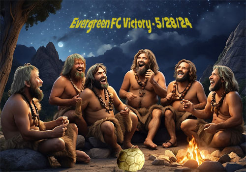
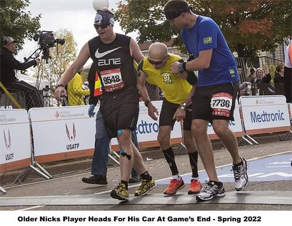
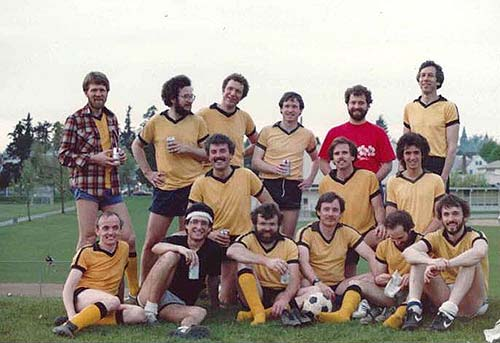
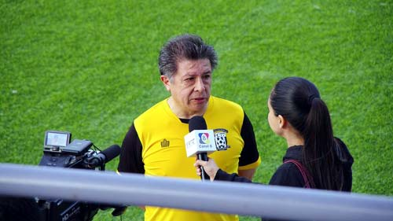
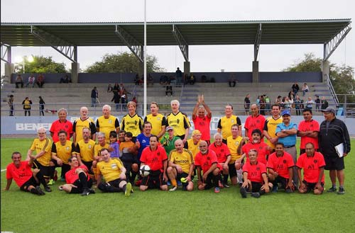
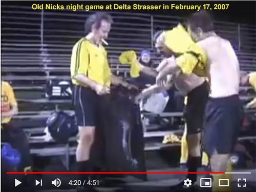
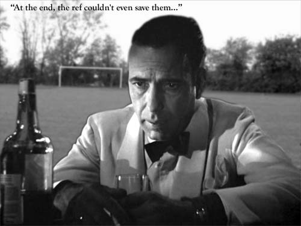
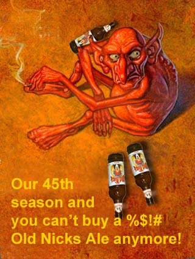

|
Spring 2024 Results:
Old Nicks
Older Nicks
Game Report - Sitting In 3rd

June 11, 2024. What a season.
Spills, chills, and many a thrill. When was the last time we achieved
4 wins?
I suspect it has been a while. We're sitting in third place
and with a tie or a victory we'll finish there ahead of the Royals and
Evergreen. No trophy. But a plastic cup of cold beer will do me just
fine.
Game Report: May 28, 2024, FC77 Older
Nicks (Away) VS Evergreen FC O/65
It was quite a night. FC77,
the club chose Older Nicks as the first team to experience the "Up the
77" event. The plan was to invite our other club members to come and
cheer us to victory. And it worked. At least 20 members came and
cheered us on. It was reminiscent of when we had the beer wagon at the
Montessori school and cheering (or jeering) us on. Those were the
days.
We had a good turnout and with the addition of the two
new kids on the block Brian Gaffney and Eric Louvrey it was probably
the strongest team we had all year. Both teams traded blows in the
first half. Evergreen had several chances to score into an open net
but failed and Shumaker got a couple of shots off that kept 'em
honest. On one occasion Jon Sokol broke away and had a one-on-one with
me and sent me sprawling in the wrong direction but pushed the ball
wide right.
In that half, we managed to hit the crossbar and
forced Jon Chan into some great saves. then up stepped our youngest
member Brian with a rocket of a shot that Jon Chan couldn't stop even
on his best day. With a goal up Sheie and Eric continued to pressure
through the center while Black, Bruce, Porter, and Kim worked the ball
down the wings. The defense was solid. With Vogel and Brian keeping
the center cleared and Hevel, Robert, and McCormick sweeping the ball
away. With the clock ticking down Brian was launching balls up the
field like mortar shells.
With only a few minutes left Glen
managed to collide with an Evergreen player. Glen had a very hard fall
and as an overachiever, he managed to break his shoulder in 32 places.
OK, maybe two places. 2 still seems like a lot of breakage. We pulled
him off the field, buried him and had a nice ceremony. OK, we didn't
do that either. But the game did continue.
The ref was about
ready to blow the whistle when Bruce Soderberg unleashed a tremendous
shot. I moved to my right but it was deflected left. I could feel my
muscles straining to change direction. I was able to dive and get my
hands on the ball to the great cheers of the "77". They said it looked
like a slow-motion effect. I told them at 71 you don't "dive", you
"crumple". I rolled the ball out for Brian to launch another ICBM and
the game was over. VICTORY IS OURS! Great cheers from our Up the 77
crowd
At the end of the game, we all ran over to see if Glen
was OK. He said he was in a lot of pain and very uncomfortable. Our
response was "So you'll still be able to operate the beer wagon?" He
shook his head yes. An audible sigh of relief was heard emitting from
the crowd of players.
Bruce volunteered to be the bartender and he
did fine.
It was a warm evening and the chatter was lively. It
was fun watching the younger members of the club look down in awe at
Glen's creation, the beer wagon. What a great victory.
Cheers
- Mike Calder
8v8 Is A Hellava Game

Match Report
(Another) Blast From The Past

As the Spring 2024 Season
progresses, how many of your current Old Nicks players can you pick out of this
Stouthearts photo from 1983?
The names- ( L to R):
Rear: John Harland, David Porter, Bob
Stout, Mike Calder, Doug Morasch. ??
Middle: ??, ??,
George Karembelas
Front: David Southey, Lee Gadinas, Al
Gerritsen, Mark Dillon, Peter Korn, Dan Murphy
Apologies to
our brethren who only got a "??". Old soccer brains only remember so
many names after 41 years. [Fill us in through the
FC77 Facebook page
if you are that person, or know their names!]
|
Nicks In The Baja
March 31, 2020. A trophy hungry mob of norteños descended on La Paz
in early March. Invited (through Mike Calder's good works) there by
the local Baja men's league, the mostly-Nicks had a wonderful time.
As Anatole put it, "Well, officially, we had 4 [teams] then they heard
that Nicks are old but can still beat younger teams so one team
cancelled the day (or 3) prior to the tournament. We tied one team 0-0
and lost to a team that was made of their best players from 10 teams.
First game was 2-4 loss but in the finals, we played each other again
and the game and the score was very close this time. We lost 3-4 but
the game could have gone either way. In the final, we started to lose
players one at a time also and had Glenn who was already playing with
Lisa's crutches to take on some secret Mezcal and told him to get in
there and he played the full match."

Yes, we even got local tv coverage!

Take a look at all of Rich and Tammy Black's
excellent picture coverage of the tournament. [9/22/21: La Paz
Tournament II announced. See FC77 main page for details.]
Night Moves

August 11,
2021.
View the above
Youtube
video and relive a time when some winter season games were
under the lights at Strasser field at Delta Park. Marvel at a
time when manager David collected your sweaty jersey at game end
and laundered them for you in the vain hope
that a complete set of team uniforms would last through a season of player mishaps. Truely, a bygone time...
Noir Win

October 21, 2019. Our no-guff
reporter Roy Thompson
tells the
unvarnished story of the Nicks 2-1 win over Willamette Valley
Vinyards.

|
{kind=link}
{kind=link}
{kind=link}
{kind=link}